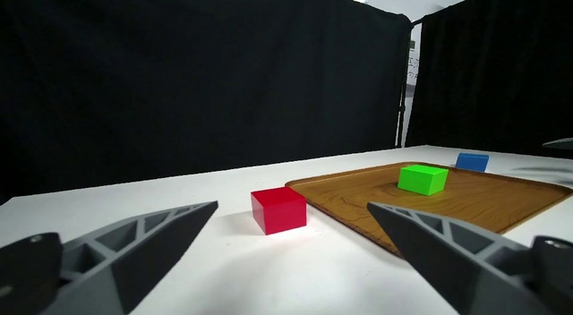
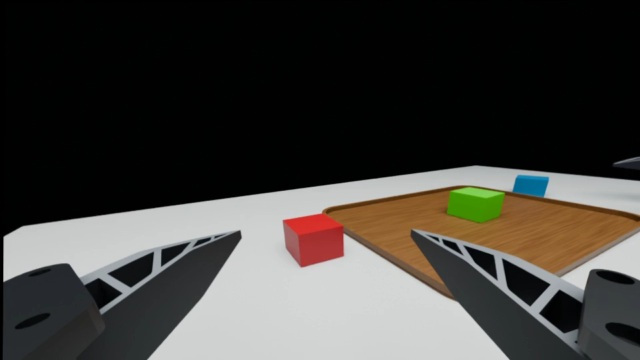

Novel Platform
Generating demonstrations in a new scene
For the Marvin M6S workcell, the coding agent translates a stacking instruction into a simulation program. The renderer uses a real camera frame to give the simulated motion the appearance of the physical workcell.

Real first frame
Simulated scene
Task program outlineleft.stack(red, green) left.park() right.stack(blue, red)- Proxy video
- Rendered video